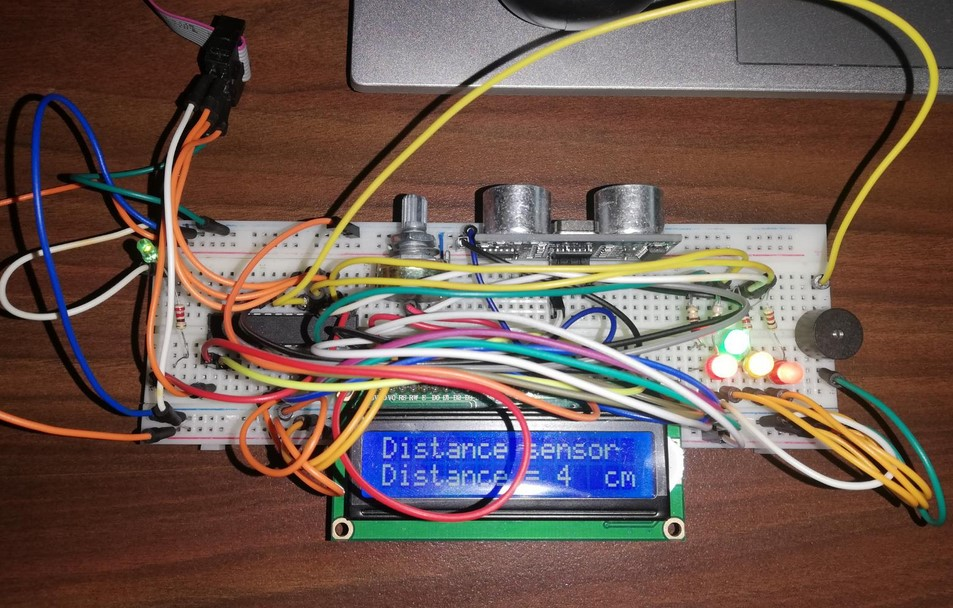
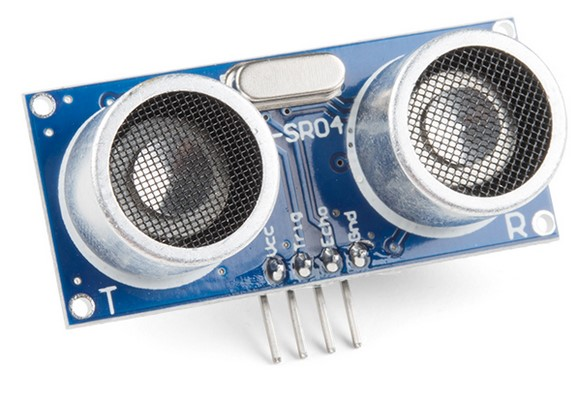
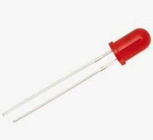
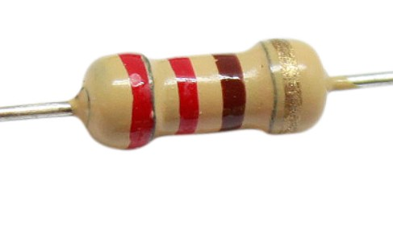
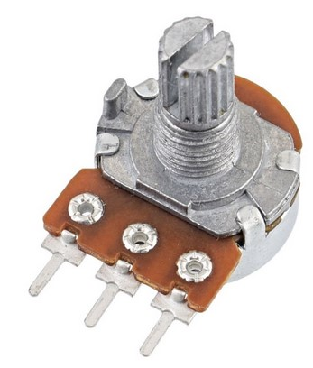
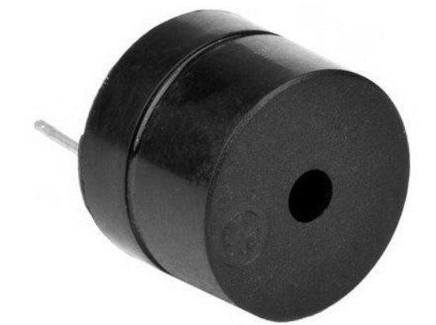
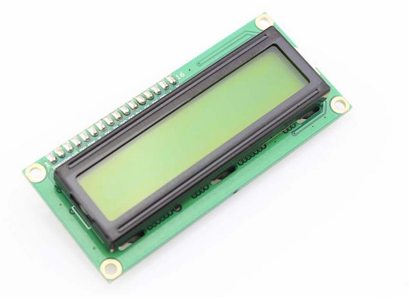
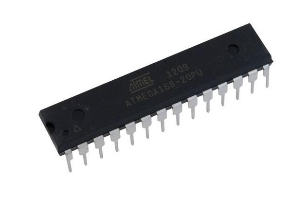

LABSI
2022
Authors:
Jakub Oleksy (Nº)
1220420@isep.ipp.pt
David Tertre (Nº)
1220515@isep.ipp.pt

In the project of LABSI subject, systems laboratory, we have decided to implement a functional prototype, using Atmega168 microcontroller and other components that we will explain later.

We will use the knowledge acquired in past subjects, this subject and the help of the internet.

The goal is to use an ultrasonic sensor to send a trigger and an echo to calculate the distance between an object and sensor. The signal from ultrasonic sensor goes to Atmega168 and gets calculated to the distance. Then it is being sent to LCD Screen to show value on a display. Depending on a distance more diodes will turn on (for example 10cm – 2 diodes 5cm - 3 diodes etc.) During whole time the buzzer will change it's frequency depending on a distance. By implementing flags TIMER2 set on compare makes interruptions with diffrent timespan. Aditionally there will be a diode sending a 1Hz signal. Potenciometer is added to change the contrast of the display. LCD screen is set to 4 bit mode which means that displaying is done twice (1st half and 2nd half) Lastly final project can be powered either by USBASP or external power supply although the program needs to be "inserted" first to the microcontroller by USBASP. Only after that power supply can be changed.
ULTRASONIC SENSOR:
• 1x Ultrasonic Sensor HC-SRO4 (To measure the pulse width and with the equations calculate the distance)

LED:
• 5x LED (2x green 2x red 1x yellow) (to show how close the distance is + generating 1Hz signal using Timer1)

RESISTOR:
• 5x 220 Ohm Resistor (used to not destroy the LED)

POTENCIOMETER:
• 1x Potenciometer B50K used to change the contrast in LCD screen

BUZZEER:
• 1x Buzzer 5V (to make buzzing sound with TIMER2)

LCD SCREEN:
• 1x LCD Screen QAPASS 1602A (to show calculated distance)

ATMEGA 168:
• 1x Atmega168 (microcontroller)

WE ARE USING MICROCHIP STUDIO (ATMEL STUDIO 7). LIBRARIES USED:
• avr/io.h
• avr/interrupt.h
• util/delay.h
• stdlib.h
• "lcd.h" (this library was created by us but we needed help of internet with setting up LCD screen itself)
HERE ARE THE FUNCTIONS USED IN THE CODE:
• void HCSR04Init()
• void HCSR04Trigger()
• uint16_t GetPulseWidth()
• void initialize(void)
• void lcd_command(unsigned char cmnd)
• void lcd_clear()
• void lcd_print (char *str)
• void set_Diodes(int x)
• void check_distance(int dis)
• void lcd_setCursor(unsigned char x, unsigned char y)
• int main()
• ISR(TIMER1_COMPA_vect)
• ISR(TIMER2_COMPA_vect)
• _delay_ms();
The result has been show on a video.
As you can see the diodes are working (1Hz and distance the buzzer is also working). Unfortunetly the video was recorded without sound.
We can use the potenciometer to adjust contrast of the LCD Screen.
The LCD Screen shows the calculated distance depending on time measured by ultrasonic sensor.
That distance is used later on to check how many diodes should we turn on or off. In order to do that function checks the given distance which is
an intiger
number and if the number is between certain value certain amount of leds will be turned on
This can be easily changed to work not from 0-20 cm but for example 0-24cm. (You just need to change intiger numbers in one function)
Here is a link that will take you to the flow chart of the project.
In conclusion the project allowed us to understand the following things:
• How the Ultrasonic Sensor works
• How trigger and echo is generated in order to get the signal of time that has passed between trigger and echo.
• How does the LCD SCREEN works
• How to display information about certain thing on a screen / set constrast of it / and how to save 4 bits of information then another 4
• Understand how to use LEDS and other components / How to power them when we need to
• How to use 16 bit and 8 bit timers (We were using timer 0 1 and 2)
FROM PREVIOUS LECTURES ALSO IN THIS PROJECT
• How to generate 1Hz signal with timer
• How does the Atmega Microcontrollers work
This project was supposed to read any distance and inform us if we are getting closer to an object (starting form 20cm to 0cm) and it
does it's job. This system is fairly similar to the one's that are used in cars (Parking system). This is a great way to get to understand programming environment better
and become more insterested with microcontrolers
[1] Atmel: https://www.microchip.com/en-us/tools-resources/develop/microchip-studio
[2] LABSI moodle: https://moodle.isep.ipp.pt/course/view.php?id=3821
[3] Instructables: https://www.instructables.com/AVR-Microcontroller-Ultrasonic-Distance-Sensor-HC-/
[4] Electrosome: https://electrosome.com/ultrasonic-distance-sensor-atmega32/
[5] Circuitdigest: https://circuitdigest.com/microcontroller-projects/distance-measurement-using-hc-sr04-avr